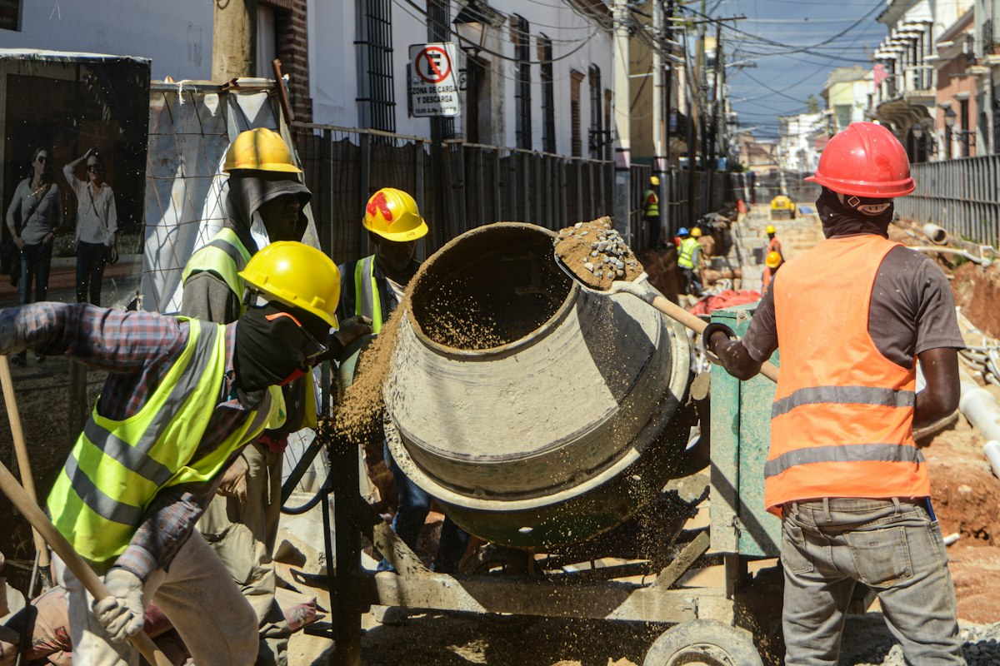

Concrete · In-house
Drum mixers
Fresh, consistent mixes right at the pour point — slabs, columns, screeds and patch works without waiting on a truck. Ideal for remote plots and top-ups.
- Uniform mix, less segregation
- Pour on schedule, even off-grid